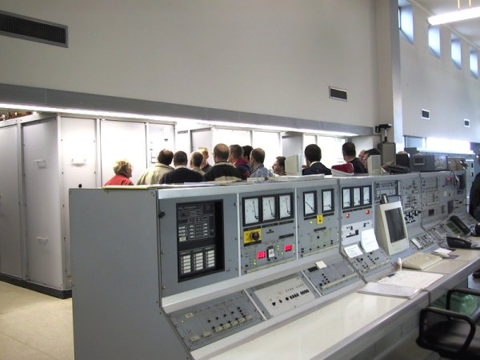

Op deze pagina heb ik een aantal foto's opgenomen die genomen zijn door O.M. Ger, PD0RSW.
Verder heb ik er een verslag bij geschreven van deze gedenkwaardige dag..
Dan volgen hier nog enkele foto's:





Bij bovenstaande foto wil ik nog even de namen vermelden;
Van links naar rechts zijn dit:
Michel, LX1NW; Jack, LX1JX; Huub, PA1HVI (toen nog PE1FBG); Herman, PE1LSH;
Huub, PE1MUL..; Paul, PA0EVO; Kurt (zn van PA3GAA); Wiel, NL5757; Harry, PA3ARM;
Sylvia (QRP van PA3AXI); Jan, PA3GAA; Rob, PA3AXI; Katja (QRP van PA3AXI);
Jack, PE1KXH; daarachter links verscholen staat Hay, PE1RBP :-) ; Jan, PE1KGA;
Jos, PE1LUN; Els (XYL van PE1KGA); Harry, PA1PLT; Mariet (XYL van PA1PLT);
Ger, PD0RSW; Jan, PA0SIM en geheel rechts staat Henk, PD0PPU.
Van bovenstaande mensen zijn tot op heden PE1LSH, PA0EVO, NL5757, PA3AXI, PA3GAA,
PE1KGA, PA1PLT en Mariet helaas inmiddels overleden.